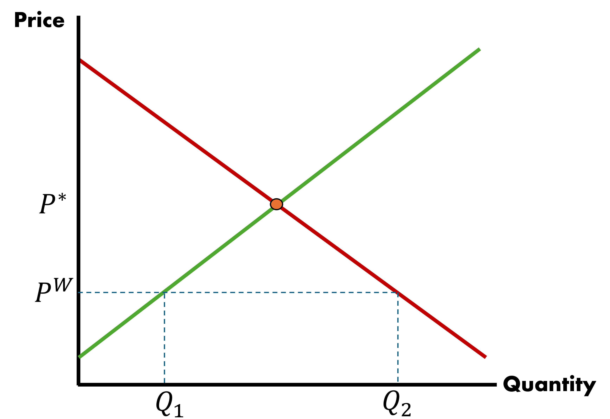
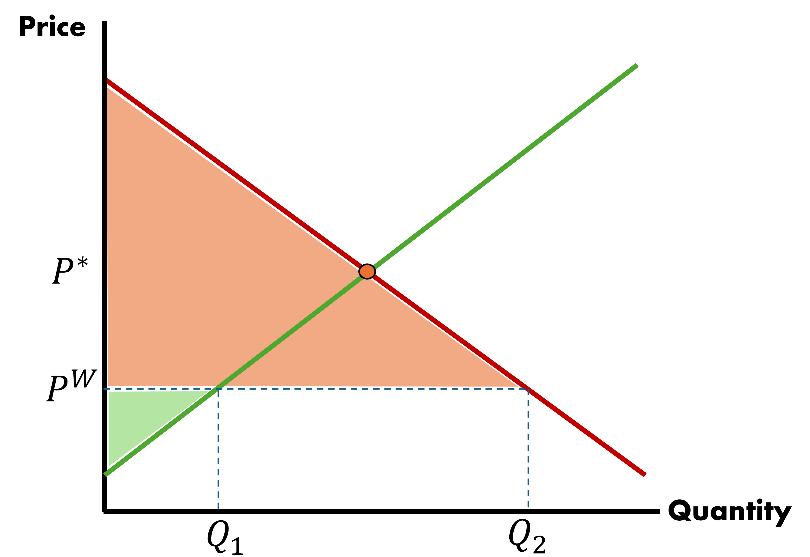

Trade Policy | Tariffs, Quotas, and Subsidies
EC 380 - International Economic Issues
2025
Recap
Previously
Trade openness appears to have had an effect on the compositional make-up of US industrial activity
Effects are likely negative for low-income unskilled workers
Migration openness yields little evidence of wage change
Trade openness is linked with political consequences, where people become more polarized
Now
Effects of protectionism through tariff rates and quotas
Inform ourselves on how interference with free trade impacts markets
Key Topics
We will work through five topics:
- Use market theory to explain the effects of tariffs on market outcomes
- Compare tariff data on inputs and outputs to compare effective and nominal protection levels
- Comparing the impact of quotas relative to tariff rate adjustments
- New unconventional methods of protectionism
Glossary
Let’s define key terms for this lecture:
- Protectionism: A concerted effort to shield domestic industries from external competitive pressure by restricting foreign import choices. This can be achieved through subsidizing local industry, taxing imports, and limiting number of goods that can enter the country, per annum
- Tariff: Percentage of value based tax on a country’s imports. These vary based on the origin and commodity of imported goods
- Quota: Weight and quantity limits on the amount of goods that can be imported into the country
Not all quotas are acts of protectionism. Some are required for national security (e.g. protecting the domestic supply of food), or to avoid health concerns related to imoprts from specific countries (e.g. livestock diseases)
Tariffs
Tariff Analysis
So far we have examined transitions from autarky into free trade
In practice, even the most seemingly open economies will have some kind of measures in place that regulate the manner in which goods are traded internationally
Take something that seems like a good cause: quality control
Restrictions introduce quality control over goods entering the country but have the added effects of limiting volume of trade that would otherwise occur
Why?
Trade policy, like any other form of interverntion, introduces costs for firms, which get passed on to consumers. Some consumers will switch to domestic goods or not consume at all
Tariff Analysis
To understand how tariffs may affect outcomes, we have to understand the components and start from the beginning
- Consumer Demand Curve
- Producer Supply Curve
- Consumer and Producer Surplus
Consumer Demand Curve
- Demand is mapped by the marginal willingness of individuals to pay for a good at a given price
- At a particularly high price, only a small number of individuals would purchase
- As price falls, the good enters into a greater pool of individuals’ marginal willingness to pay, leading to quantity demanded rising
Therefore, we assume a negative relationship between market price and quantity demanded
Producer Supply Curve
Supply is mapped by the marginal willingness to receive by producers for a good at a given price
When the market price is particularly low, only a small number of firms can afford to service the market
- As prices rise, the quantity supplied to the market increases, given that the greater associated revenue makes business profitable for an increasing number of firms
Therefore, we assume a positive relationship between market price and quantity supplied
Consumer and Producer Surplus
When we combine these two strands of intuition we arrive at:
- Demand curve for a given good is downward sloping
- Supply curve for a given good is upward sloping
As per standard economic theory, the market will produce where supply meets demand
Any difference between marginal willingness to pay and price represents surplus for the consumer
Any difference between marginal willingness to receive and price represents surplus for the producer
Goods Market Equilibrium

Consumer and Producer Surplus: Graph

Consumer and Producer Surplus: Calculation
In order to quantify welfare, we need to know the size of these areas. Thankfully, we will work with triangles which have a simple formula
To calculate the area of consumer surplus
\[ CS = \dfrac{1}{2} \times [\text{Demand}(q = 0) - p^{*}] \times q_{d}^{*} \]
To calculate the area of producer surplus
\[ PS = \dfrac{1}{2} \times [p^{*} - \text{Supply}(q = 0) ] \times q_{s}^{*} \]
Where \(p^{*}\) and \(q^{*}\) are simply the equilibrium price and quantity, respectively
Consumer and Producer Surplus
These triangles are useful and help us understand the market:
Help us discuss implications of tariffs and quotas
CS and PS are determined by market prices and quantities
The question remains: How do tariffs influence P and Q?
Our demand and supply curves will reflect national production capacities
Equilibrium price is determined by world price
Introduce World Trade

\[ P^{W} < P^{*} \]
Local supply is at \(Q_{1}\) below market market demand \(Q_{2}\)
Import amount is \[ Q_{2} - Q_{1} \]
Introduce World Trade
- Market experiences a huge increase in CS due to trade
- PS falls, but net welfare rises (CS + PS)
- Assume it is a small country \(\Rightarrow\) the scale of demand cannot affect world price
Imposing a Tariff
A tariff will upset this balance
Let the country’s government impose a tariff in the amount of \(t\), per good imported
Price will update to \(P^{t} = P^{W} + t\), all of the outcome variables we measured are affected
Imposing a Tariff

Consumer Surplus Under Free Trade

CS under free trade, when \(t = 0\): \(a + b + c + d + e + f\)
Consumer Surplus With Tariff

CS under tariff, with tariff \(t > 0\): \(e + f\)
Change in Consumer Surplus
CS under free trade, when \(t = 0\): \(a + b + c + d + e + f\)
CS under tariff, with tariff \(t > 0\): \(e + f\)
What is the Change in CS?
\(\Delta CS = -(a + b + c + d)\)
Producer Surplus Under Free Trade
PS under free trade, when \(t = 0\): \(g\)
Producer Surplus With Tariff
PS under tariff, with tariff \(t > 0\): \(g + a\)
Government Revenue With Tariff
Government collects revenue \(t \; \times\) the quantity of imports
\[ c = t \times [Q_{2}^{*} - Q_{1}^{*}] \]
\(c\) is transferred form consumers to the Government
Tariff Analysis
Consumers lost \(a + b + c + d\), others gained \(a\) and \(c\)
There is a societal net loss of \(b + d\) where \(d\) is deadweight loss and \(b\) is efficiency loss
Deadweight Loss
Deadweight Loss
Loss associated with the economic welfare consumers that otherwise would have purchased in this market would have generated, had there been no government interference
\[ d = \dfrac{1}{2} \Delta P \times \Delta Q_{2}, \; \text{where } Q_{2} \text{ represents quantity demanded} \]
Efficiency Loss
Efficiency Loss
Loss associated with producing additional goods at an excessive cost, relative to how much it would have cost the rest of the world to generate these goods
\[ b = \dfrac{1}{2} \Delta P \times \Delta Q_{1}, \; \text{where } Q_{1} \text{ represents quantity supplied} \]
Tariff Analysis Caveats
These equilibria we have seen do not take into account:
- Retaliatory tariffs (e.g. China Trade War)
- Innovation and productivity (less competition)
- Import/Export interdependencies within countries
- Rent seeking behavior (lobbying)
Input & Outputs
Inputs & Outputs
While tariffs protect one industry, they may also inconvenience other domestic industries that are reliant on inputs of intermediated goods
- US tariffs on steel products protected the steel industry and hurt the automotive industry
Let’s introduce two concepts:
Nominal Rate of Protection: The amount of a tariff expressed as a percentage of a good’s price. This is the tariff we have discussed so far
Effective Rate of Protection: The level of protection on intermediate inputs and nominal tariff levied on the protected good. Measured as percentage change in domestic value added after tariffs on intermediate and final goods are applied
Inputs & Outputs
I mentioned value added, so let’s define that too
Value-Added: Price of a good minus the cost of intermediate imports used to produce the good
With that defined, we can take a deeper look at Effective Rate of Protection
\[ \text{Effective Rate of Protection} = \dfrac{(VA^{*} - VA)}{VA} \]
\(VA\) is domestic value-added under free-trade
\(VA^{*}\) is \(VA\) after accounting for all relevant tariffs
Effective Rate of Protection
Suppose we introduce two tariffs, in sequence

Effective Rate of Protection: Final

Effective Rate of Protection: Intermediate

Effective Rate of Protection

Inputs & Outputs
It is possible to go too far trying to protect domestic industries and end up hurting them
Sufficiently high import reliance can make tariff protection yield negative protection measures, depending on the good examined

Summary
Tariffs are bad for countries with little influence on world prices
Large countries exhibit an ambiguous effect, conditional on everyone playing nice
Tariff protection can backfire, depending on input reliances
Quotas
Quota Analysis
Quotas limit the quantity of good imports rather than adjust the price
The net results are the same:
- Less imports
- Fall in total domestic consumption
- Rise in domestic production
However there is a significant difference from tariffs
No tariff revenue for the government \(\Rightarrow\) Greater loss in economic welfare
Quotas
Type of Quotas
Limitations: Specifies in terms of quantities product is counted in
- For example, number of cows, kg of ore
Licensing Requirement: Forces importers to gain government approval with respect to importing a specific type of good. By regulating the number of licenses available, the government can place an obstacle on import volumes
Voluntary Export Restraint (VER): Exporting country voluntarily agrees to limit exports for some period. This is usually a compromise made to avoid more extreme measures being levied by the importer country
How Do Quotas Work?
Let a country enter free-trade and experience world price equal to \(P_{w}\)
- Suppose the government sets a quota on imports of quantity \(Q_{2}^{*} - Q_{1}\)
At \(\;\; P_{w}\)
- Domestic production is \(Q_{1}\)
- Domestic demand is \(Q_{2}\)
- Imports are \(Q_{2} - Q_{1}\)
- Prices will rise until the market can clear
How Do Quotas Work?
- The Domestic Price settles at \(P_{q}\)
- Domestic Supply grows to \(Q_{1}^{*}\)
- The main difference is that the area \(c\) is not captured by the government
Difference from Tariffs
- Area \(c\) captured by foreign producers that earn extra profits
- Domestic Producers prefer quotas over tariffs as a form of industry protection
Observing Protectionism
Seeing is Believing
Many non-tariff measures function similarly to the quotas we have considered
Economists divide these into two categories:
Tariffs
Non-Tariff Barriers (NTBs)
- NTBs can be subdivided into quotas and non-tariff measures
- They are often hidden, in that they are not presented as barriers, even though they contribute a similar influence
Observing Protectionism - Example
One common example is with respect to chlorinated chicken imports from the US to UK
- This is poultry that has been washed with chlorine
- Done to treat high levels of bacteria, a symptom of poor hygiene and low animal-welfare conditions
- Practice of chlorine washing chicken is common practice in the US poultry industry, but banned in the UK
- Higher hygiene and animal welfare standards make it so that chlorine washing are not necessary
Is this a legitimate NTB?
It’s hard to tell if they are directly created to target trade or if its solely for domestic standards which happen to have trade-related effects
Coordinating Trade Policy
World Trade Organization (WTO)
Most countries are part of the World Trade Organization and adhere to a default non-discriminatory “Most Favored Nations” (MFN) tariff rate schedule that applies to each country they trade with
An exception to this is the use of Regional Trade Agreements which apply updated (reduced) tariffs to the set of parties included in an agreement
- Free Trade Agreements
- Preferential Trade Agreements
- Custom Unions
EC380, Lecture 04 | Trade Policy